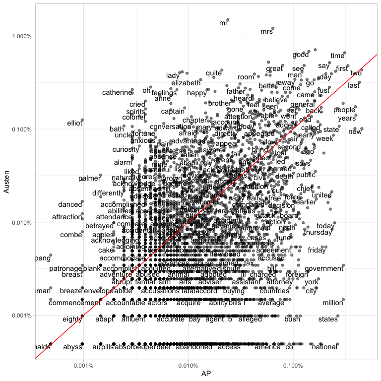

Authors: Julia Silge, David Robinson
License: MIT
Using tidy data principles can make many text mining tasks easier, more effective, and consistent with tools already in wide use. Much of the infrastructure needed for text mining with tidy data frames already exists in packages like dplyr, broom, tidyr, and ggplot2. In this package, we provide functions and supporting data sets to allow conversion of text to and from tidy formats, and to switch seamlessly between tidy tools and existing text mining packages. Check out our book to learn more about text mining using tidy data principles.
Installation
You can install this package from CRAN:
install.packages("tidytext")Or you can install the development version from GitHub with remotes:
Tidy text mining example: the unnest_tokens function
The novels of Jane Austen can be so tidy! Let’s use the text of Jane Austen’s 6 completed, published novels from the janeaustenr package, and transform them to a tidy format. janeaustenr provides them as a one-row-per-line format:
library(janeaustenr)
library(dplyr)
original_books <- austen_books() %>%
group_by(book) %>%
mutate(line = row_number()) %>%
ungroup()
original_books
#> # A tibble: 73,422 × 3
#> text book line
#> <chr> <fct> <int>
#> 1 "SENSE AND SENSIBILITY" Sense & Sensibility 1
#> 2 "" Sense & Sensibility 2
#> 3 "by Jane Austen" Sense & Sensibility 3
#> 4 "" Sense & Sensibility 4
#> 5 "(1811)" Sense & Sensibility 5
#> 6 "" Sense & Sensibility 6
#> 7 "" Sense & Sensibility 7
#> 8 "" Sense & Sensibility 8
#> 9 "" Sense & Sensibility 9
#> 10 "CHAPTER 1" Sense & Sensibility 10
#> # … with 73,412 more rowsTo work with this as a tidy dataset, we need to restructure it as one-token-per-row format. The unnest_tokens() function is a way to convert a dataframe with a text column to be one-token-per-row:
library(tidytext)
tidy_books <- original_books %>%
unnest_tokens(word, text)
tidy_books
#> # A tibble: 725,055 × 3
#> book line word
#> <fct> <int> <chr>
#> 1 Sense & Sensibility 1 sense
#> 2 Sense & Sensibility 1 and
#> 3 Sense & Sensibility 1 sensibility
#> 4 Sense & Sensibility 3 by
#> 5 Sense & Sensibility 3 jane
#> 6 Sense & Sensibility 3 austen
#> 7 Sense & Sensibility 5 1811
#> 8 Sense & Sensibility 10 chapter
#> 9 Sense & Sensibility 10 1
#> 10 Sense & Sensibility 13 the
#> # … with 725,045 more rowsThis function uses the tokenizers package to separate each line into words. The default tokenizing is for words, but other options include characters, n-grams, sentences, lines, paragraphs, or separation around a regex pattern.
Now that the data is in a one-word-per-row format, we can manipulate it with tidy tools like dplyr. We can remove stop words (available via the function get_stopwords()) with an anti_join().
tidy_books <- tidy_books %>%
anti_join(get_stopwords())We can also use count() to find the most common words in all the books as a whole.
tidy_books %>%
count(word, sort = TRUE)
#> # A tibble: 14,375 × 2
#> word n
#> <chr> <int>
#> 1 mr 3015
#> 2 mrs 2446
#> 3 must 2071
#> 4 said 2041
#> 5 much 1935
#> 6 miss 1855
#> 7 one 1831
#> 8 well 1523
#> 9 every 1456
#> 10 think 1440
#> # … with 14,365 more rowsSentiment analysis can be implemented as an inner join. Three sentiment lexicons are available via the get_sentiments() function. Let’s examine how sentiment changes across each novel. Let’s find a sentiment score for each word using the Bing lexicon, then count the number of positive and negative words in defined sections of each novel.
library(tidyr)
get_sentiments("bing")
#> # A tibble: 6,786 × 2
#> word sentiment
#> <chr> <chr>
#> 1 2-faces negative
#> 2 abnormal negative
#> 3 abolish negative
#> 4 abominable negative
#> 5 abominably negative
#> 6 abominate negative
#> 7 abomination negative
#> 8 abort negative
#> 9 aborted negative
#> 10 aborts negative
#> # … with 6,776 more rows
janeaustensentiment <- tidy_books %>%
inner_join(get_sentiments("bing"), by = "word") %>%
count(book, index = line %/% 80, sentiment) %>%
spread(sentiment, n, fill = 0) %>%
mutate(sentiment = positive - negative)
janeaustensentiment
#> # A tibble: 920 × 5
#> book index negative positive sentiment
#> <fct> <dbl> <dbl> <dbl> <dbl>
#> 1 Sense & Sensibility 0 16 32 16
#> 2 Sense & Sensibility 1 19 53 34
#> 3 Sense & Sensibility 2 12 31 19
#> 4 Sense & Sensibility 3 15 31 16
#> 5 Sense & Sensibility 4 16 34 18
#> 6 Sense & Sensibility 5 16 51 35
#> 7 Sense & Sensibility 6 24 40 16
#> 8 Sense & Sensibility 7 23 51 28
#> 9 Sense & Sensibility 8 30 40 10
#> 10 Sense & Sensibility 9 15 19 4
#> # … with 910 more rowsNow we can plot these sentiment scores across the plot trajectory of each novel.
library(ggplot2)
ggplot(janeaustensentiment, aes(index, sentiment, fill = book)) +
geom_bar(stat = "identity", show.legend = FALSE) +
facet_wrap(~book, ncol = 2, scales = "free_x")
For more examples of text mining using tidy data frames, see the tidytext vignette.
Tidying document term matrices
Some existing text mining datasets are in the form of a DocumentTermMatrix class (from the tm package). For example, consider the corpus of 2246 Associated Press articles from the topicmodels dataset.
library(tm)
data("AssociatedPress", package = "topicmodels")
AssociatedPress
#> <<DocumentTermMatrix (documents: 2246, terms: 10473)>>
#> Non-/sparse entries: 302031/23220327
#> Sparsity : 99%
#> Maximal term length: 18
#> Weighting : term frequency (tf)If we want to analyze this with tidy tools, we need to transform it into a one-row-per-term data frame first with a tidy() function. (For more on the tidy verb, see the broom package).
tidy(AssociatedPress)
#> # A tibble: 302,031 × 3
#> document term count
#> <int> <chr> <dbl>
#> 1 1 adding 1
#> 2 1 adult 2
#> 3 1 ago 1
#> 4 1 alcohol 1
#> 5 1 allegedly 1
#> 6 1 allen 1
#> 7 1 apparently 2
#> 8 1 appeared 1
#> 9 1 arrested 1
#> 10 1 assault 1
#> # … with 302,021 more rowsWe could find the most negative documents:
ap_sentiments <- tidy(AssociatedPress) %>%
inner_join(get_sentiments("bing"), by = c(term = "word")) %>%
count(document, sentiment, wt = count) %>%
spread(sentiment, n, fill = 0) %>%
mutate(sentiment = positive - negative) %>%
arrange(sentiment)Or we can join the Austen and AP datasets and compare the frequencies of each word:
comparison <- tidy(AssociatedPress) %>%
count(word = term) %>%
rename(AP = n) %>%
inner_join(count(tidy_books, word)) %>%
rename(Austen = n) %>%
mutate(AP = AP / sum(AP),
Austen = Austen / sum(Austen))
comparison
#> # A tibble: 4,730 × 3
#> word AP Austen
#> <chr> <dbl> <dbl>
#> 1 abandoned 0.000170 0.00000493
#> 2 abide 0.0000291 0.0000197
#> 3 abilities 0.0000291 0.000143
#> 4 ability 0.000238 0.0000148
#> 5 able 0.000664 0.00151
#> 6 abroad 0.000194 0.000178
#> 7 abrupt 0.0000291 0.0000247
#> 8 absence 0.0000776 0.000547
#> 9 absent 0.0000436 0.000247
#> 10 absolute 0.0000533 0.000128
#> # … with 4,720 more rows
library(scales)
ggplot(comparison, aes(AP, Austen)) +
geom_point(alpha = 0.5) +
geom_text(aes(label = word), check_overlap = TRUE,
vjust = 1, hjust = 1) +
scale_x_log10(labels = percent_format()) +
scale_y_log10(labels = percent_format()) +
geom_abline(color = "red")
For more examples of working with objects from other text mining packages using tidy data principles, see the vignette on converting to and from document term matrices.
Community Guidelines
This project is released with a Contributor Code of Conduct. By participating in this project you agree to abide by its terms. Feedback, bug reports (and fixes!), and feature requests are welcome; file issues or seek support here.